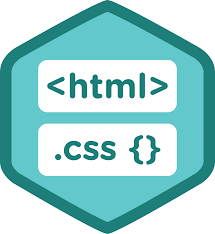
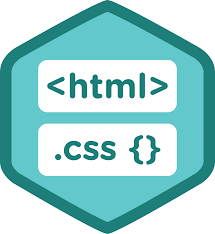

HTML
Agenda
- Semantics
- Accessibility
- Lessons learned
Accessibility

In order to ensure that not only experienced web users can use our web application, we must follow five priciples.


What's next
Sources
Presentation sources
Programatic sources
- SASS Language - https://sass-lang.com/
- Node.js - https://nodejs.org
- Node-Sass binding https://github.com/sass/node-sass
- Nucleus styleguide - https://github.com/holidaypirates/nucleus
- HTML5 Element Flowchart https://news.maythecode.com/twenty-five-seconds-thats-all-it-took-before-the-html5-element-flowchart-was-my-best-friend-fe109e223e0a
- Web Content Accessibility Guidelines https://www.w3.org/TR/WCAG20/
- Dev hints https://devhints.io/
- Code burst - accesibility and front-end articles https://codeburst.io/
- 30 seconds of css - css componentshttps://atomiks.github.io/30-seconds-of-css/
- CSS Tricks https://css-tricks.com
Other sources
Lessons learned
- Writing correct and semantic HTML helps us with:
- CSS